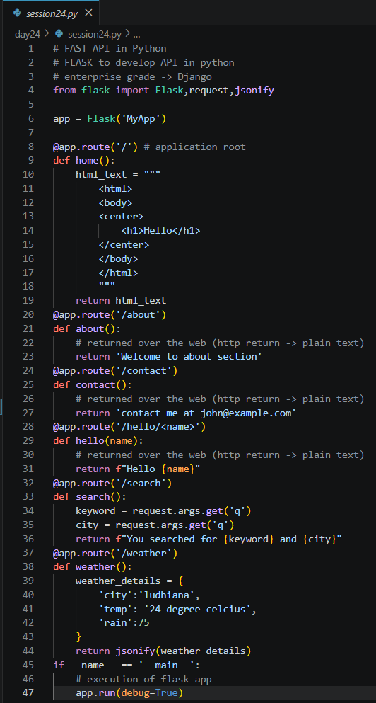
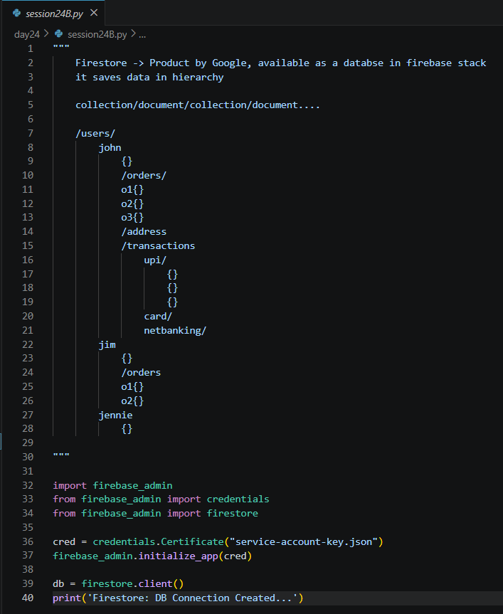
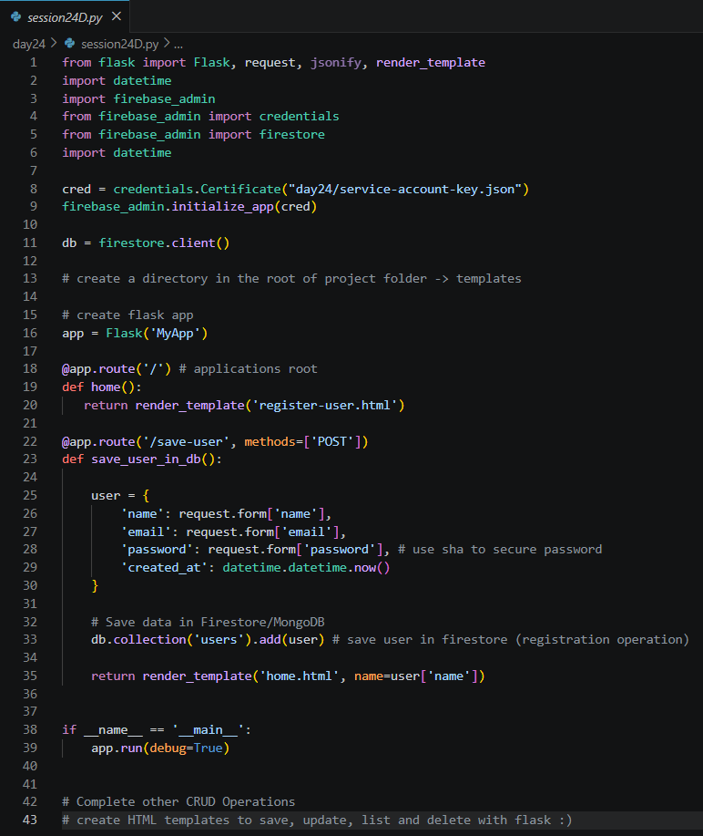

Date: 29th July 2026
Duration: 2 Hours
Training Company: Auribises Technologies
Trainer: Mr. Ishant Kumar
Today's session introduced backend web development using the Flask framework and explored Firebase Firestore as an alternative cloud database. We learned how Flask applications expose routes that can return HTML pages, plain text, and JSON responses, making them suitable for building REST APIs and dynamic web applications. Alongside Flask, we connected Python with Google Firestore to perform cloud-based CRUD operations and integrated a simple user registration system.
We started by building our first Flask application and understanding how routing works. Multiple endpoints were created to return HTML pages, plain text responses, dynamic URL parameters, query parameters, and JSON data. The session demonstrated how Flask can be used to quickly develop lightweight backend services and web APIs that communicate over HTTP.

After learning basic routing, we explored Flask's template engine using
render_template(). Instead of embedding HTML directly inside Python code, separate HTML files
were placed inside the templates directory and rendered dynamically. Data such as usernames
could be passed from Flask to HTML templates, enabling the creation of personalized and reusable web pages.
The session then shifted to Google Firebase Firestore, a cloud-based NoSQL database that stores information in a hierarchical structure of collections and documents. We authenticated using a Firebase service account, established a Firestore connection, and explored how cloud-hosted databases differ from MongoDB while still supporting efficient document-based storage.

We implemented Create, Read, Update, and Delete (CRUD) operations on Firestore collections. Tasks were inserted as documents, filtered using query conditions, updated through document IDs, and removed when no longer required. These examples demonstrated how Firestore can be integrated into Python applications to manage cloud-hosted data efficiently.
The final part of the session combined Flask with Firestore by developing a basic user registration system. User details submitted through an HTML form were collected using HTTP POST requests and stored in a Firestore collection. After successful registration, the application redirected users to a welcome page, illustrating how frontend forms communicate with backend services and cloud databases.

Extend the Flask application by implementing the remaining CRUD operations for user management and create additional HTML templates to list, update, and delete records stored in Firestore.
View Delegate AI Project on GitHub
Today's session broadened my understanding of backend development by introducing Flask and Firebase Firestore. While previous sessions focused primarily on AI and MongoDB, this class demonstrated how web applications receive requests, process user input, and store information in cloud-hosted databases. It also highlighted the importance of separating frontend templates from backend logic to build clean and scalable web applications.
The next session will continue enhancing Delegate AI by introducing additional backend capabilities and integrations that further strengthen the project's real-world functionality.